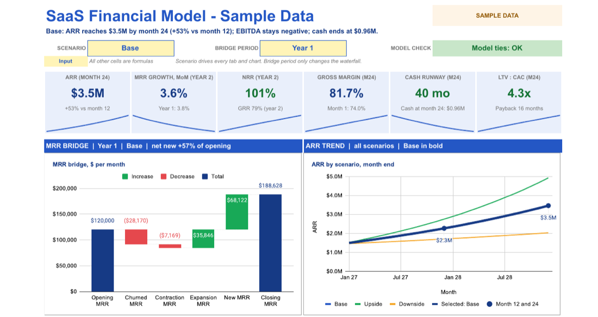
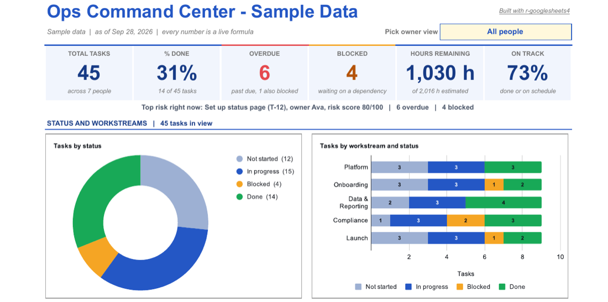
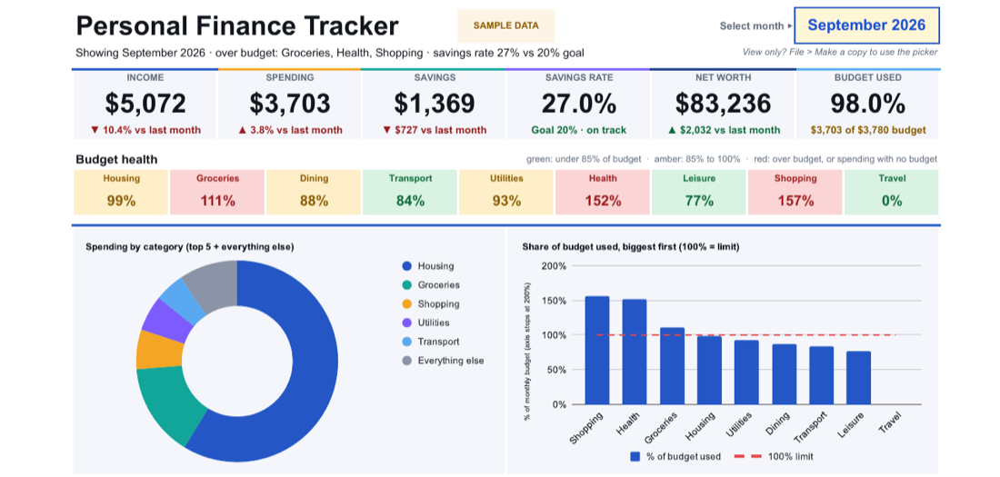

What it does
Ask your coding agent for a styled multi-tab P&L, a KPI dashboard or a budget model. The skill writes R with googlesheets4 and formats the sheet through the Sheets API. Then it exports the sheet to PDF and inspects the pages for truncated text, ### numbers, too-narrow columns and misaligned cells. It fixes what it finds and checks again.
Visual QA loop
A layout audit, a PDF export, page images and a scoring rubric find problems that reading cell values back cannot.
Least-privilege sign-in
The default scope is spreadsheets. Drive access for sharing is opt-in, and the agent asks first.
Cell-level formatting
Fonts, fills, borders, merges, freezes, charts, banding, pivots, slicers and protection, which googlesheets4 alone does not cover.
No model to rerun
The agent leaves you an R script. Rebuild or refresh the sheet with Rscript, by hand or on a schedule.
Install
Claude Code:
/plugin marketplace add salvadoraveldano/r-googlesheets4 /plugin install r-googlesheets4@r-googlesheets4-marketplace
Other agents, through the skills CLI:
npx skills add salvadoraveldano/r-googlesheets4
You need R, which the skill never installs for you, and the CRAN packages googlesheets4, googledrive and gargle, which it installs only after you say yes. The first sign-in is one click and needs no Google Cloud project. Built and tested on macOS; Windows is untested.
Three sample sheets
Each one is built by a single script from synthetic data. Rerun the script to get your own copy.



Build once, run without a model
Use the model to design and change the sheet, not to run it every day. Keep the script in version control and run it with Rscript; a team that understands the script can maintain the sheet without a model. Changing the design still means editing the script.
Kelsey Hightower makes the same argument in his PlatformCon 2026 talk ZTA: Zero Token Architecture:
"Infer once, export, and run without inference."
Safe by design
The skill never installs R, asks before installing packages, and treats text read from a sheet as data, not instructions. It refuses to rebuild into a file whose title and tabs do not match the script. Sharing exposes more than cells, so the agent names those risks before it shares anything. Details are in the security policy.
Credits
This skill exists because of the R open-source community. Thank you to Jennifer Bryan and Posit Software, PBC for googlesheets4, googledrive and gargle (with Lucy D’Agostino McGowan on googledrive, and Craig Citro and Hadley Wickham on gargle), and to everyone in the tidyverse and r-lib projects, including rig.